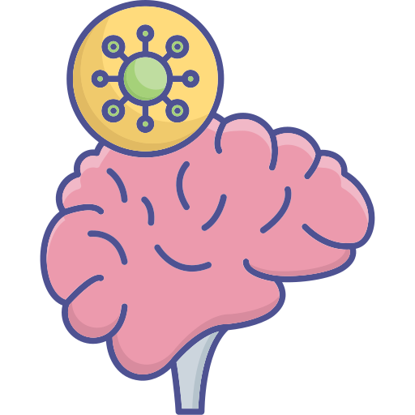
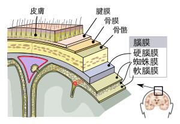

 腦膜炎
腦膜在哪裡?
腦脊膜又稱腦脊髓膜，是包裹大腦和脊髓表面的膜狀結締組織，在解剖學中，包裹腦的部分稱為腦膜，包裹脊髓的部分稱為脊膜，在哺乳動物中，腦脊膜主要分硬腦膜、蛛網膜及軟腦膜三層，蛛網膜和軟腦膜之間則是含有腦脊液的蛛網膜下腔，腦脊膜的主要生理功能是為中樞神經系統提供結構支撐和物理保護，同時通過腦髓液的循環來協助膠狀淋巴系統清理代謝廢物。

成因
指腦部及脊隨周圍的腦膜受到微生物的感染所引發的炎症反應。
症狀
細菌性腦膜炎及病毒性腦膜炎兩者的臨床表現，都會有發高燒、頭痛、嘔吐的現象，且嬰幼兒可能會出現痙孿，但細菌性腦膜炎通常很嚴重，會引起嚴重的併發症，如腦損傷、聽力損失或學習障礙，新生兒及嬰幼兒腦膜炎的症狀大多不明顯且變異也很大，只要新生兒活動力下降、胃口變差，與平常表現不同，不論有無發燒或中樞神經症狀，皆須考慮腦膜炎的可能性；0~3歲嬰幼兒如有發燒、反覆嘔吐，且合併有眼神改變、異常哭鬧、日常行為改變及前囟門膨出等情形，也應考慮是腦膜炎，3~12歲兒童症狀則較典型，常有發燒、劇烈頭痛、畏光、嘔吐、頸部僵硬、後頸疼痛、甚至精神活力變差等症狀、也會出現腦膜炎徵象kernig's sign和或Bruzinski sign，前者的檢測方法為請病童平躺，檢查者用雙手將其小腿托高，讓髖關節和膝關節皆屈曲成直角，再伸展其小腿，此時若產生阻力或疼痛即為陽性反應；後者一樣先請病童平躺，檢查者用雙手托高其頭部，將頸部迅速屈曲，若會感到疼痛使膝部因而屈曲則為陽性反應，以上2種徵象具有95%的高度特異性可檢測出是否有腦膜炎的情形。
治療
首要為維持基本生命徵象，建立呼吸道並維持通暢換氣，確保足夠腦部血流灌注，並注意避免腦水腫，此外如為細菌性腦膜炎，需依據病童的年紀及症狀，給予適當抗生素，若為病毒性腦膜炎，一般採症狀支持性療法，因大部分病毒性腦膜炎無特殊藥物可治療，除了疱疹病毒腦膜炎，可給予抗疱疹病毒藥物治療，來提高存活率及降低後遺症，若為腸病毒引發腦膜炎，可給予免疫球蛋白輸注；流感病毒及黴漿菌腦膜炎引發的自體免疫風暴，因感染導致人體免疫系統反應過度活耀時，釋放大量促發炎的細胞激素導致血管通透性增加，失控的免疫反應會造成器官損傷，故給予類固醇減輕發炎狀況或予免疫球蛋白、血漿置換術可能會有幫助。
預防
維持良好的個人衛生習慣及保持環境清潔，是日常中最基本的預防感染方式。在密集的地方，例如：學校，應盡量改善擁擠的程度，若已經出現有感染，照護者和病患都應該妥善處理口鼻分泌物，處理完需立即洗手，而腦膜炎最佳預防方法就是施打腦膜炎疫苗。
影片介紹
參考資料
王軫薇（2020）．照護一位沙門氏菌感染併發細菌性腦膜炎嬰兒之加護護理經驗．助產雜誌，(61)，50-59。https://doi.org/10.6518/TJOM.202004_(61).0006
長庚醫療財團法人（2020年）．兒童腦膜炎照護須知。https://webapp.cgmh.org.tw/article/document/art_atch/00276-20200617-100818.pdf
曹堅華、黃美智(2018)．神經系統疾病與護理．於黃美智、蔣立琦總校閱，兒科護理學 (6版12-46~12-47頁)．永大
臺北榮總護理部健康e點通（2021年12月13日）．腦膜炎之照護。https://ihealth.vghtpe.gov.tw/media/1197
衛生福利部疾病管制署（2012年11月 7日）．無菌性腦膜炎。https://www.cdc.gov.tw/Category/ListContent/81xBc8ZjnReHKsB55 Jhezg?uaid=rovLJpNdK 6XHU1m5DPb5tQ
Centers for Disease Control and Prevention（2021年5月25日）．Viral Menigitis. https://www.cdc.gov/meningitis/viral.html
Centers for Disease Control and Prevention(2021年7月15日)．Bacterial Menigitis. https://www.cdc.gov/meningitis/bacterial.html
Ye,Q.,Wang,B.,&Mao,J.(2020).The pathogenesis and treatment of the ‘cytokine storm’ in COVID-19. Journal of Infection, 80(6), 607–613. https://doi.org/10.1016/ j.jinf.2020.03.037